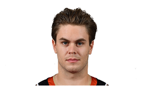
Pontus Aberg | #26
Aberg, 24, was acquired by the Oilers in a trade with the Nashville
Predators on Feb. 25, 2018. He had eight points (two goals, six
assists) in 16 games.
Selected by the Predators in the second round (No. 37) of the 2012
NHL Draft, Aberg came over from Sweden in 2014 and spent most of
three seasons with Milwaukee of the American Hockey League.
He made his NHL debut on May 3, 2016 in the Stanley Cup Playoffs
against the San Jose Sharks in Game 3 of the Western Conference
Second Round but didn't have a point in two games.
In 2016-17, Aberg had two points (one goal, one assist) in 15 games
and five points (two goals, three assists) in 16 playoff games,
including the game-winning goal in Game 5 of the Western Conference
Final against the Anaheim Ducks that gave the Predators a 3-2 series
lead.
Aberg had eight points (two goals, six assists) in 37 games in
2017-18 for the Predators before being acquired by the Oilers. He
made his Edmonton debut on Feb. 27 against the Sharks and had an
assist in a 5-2 loss.
- Position: Wingers
- Born: September 23, 1993
- Birthplace: Stockholm, SWE
- Shoots: Right
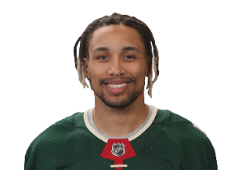
J.T. Brown | #23
Being overlooked and undrafted did not keep J.T. Brown from taking
after his father in becoming a professional athlete.
The 5-foot-10, 175-pound forward grew up outside Minneapolis, where
his father, Ted, an All-American at North Carolina State and a
member of the College Football Hall of Fame, was a running back for
the Minnesota Vikings from 1979-86.
J.T. played football in his youth but carved out a path to pro
sports on the ice, beginning with Rosemount (Minn.) High School, and
then with Waterloo of the United States Hockey League. He had a
stellar two-year stint at the University of Minnesota-Duluth; he was
named the most outstanding player at the 2011 Frozen Four, when he
helped the Bulldogs to an NCAA championship as a freshman, and was
named to the Western Collegiate Hockey Association's all-league
first team in 2012.
Brown left college after two years, went undrafted and signed with
Tampa Bay on March 28, 2012. After appearing in the final five games
of the 2011-12 season with the Lightning, Brown played for the
United States at the IIHF World Championship in 2012.
Since being called up from the American Hockey League on Nov. 12,
2013, Brown has emerged as a high-energy forechecker capable of
getting under the skin of his opponents with a relentless approach.
- Position: Wingers
- Born: July 2, 1990
- Birthplace: Burnsville, MN, USA
- Shoots: Right
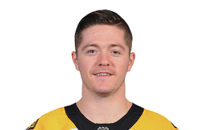
Ryan Donato | #6
"During warm-ups, it kind of felt like a dream," Donato said after
the game. "I didn't really get that warmed up because I was too
focused on everything else and just kind of the whole situation."
Donato was still enrolled at Harvard when he signed a two-year
contract with the Bruins on March 18. He completed his junior season
leading the Crimson with 43 points (26 goals, 17 assists) in 29
games and was a finalist for the Hobey Baker Award, given to the top
player in NCAA Division I hockey.
The son of former Bruins forward and NHL veteran Ted Donato -- also
the coach at Harvard -- Ryan was chosen in the second round (No. 56)
in the 2014 NHL Draft. He scored five goals in seven games in
PyeongChang before the U.S. was eliminated in a 3-2 shootout loss to
the Czech Republic in the quarterfinals.
- Position: Wingers
- Born: April 9, 1996
- Birthplace: Boston, MA, USA
- Shoots: Left
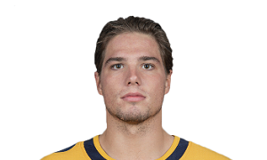
Kevin Fiala | #22
Fiala, a native of Switzerland, scored two overtime goals in the
Stanley Cup Playoffs before his 21st birthday.
In his first 18 playoff games with the Nashville Predators, Fiala
scored five goals -- two in overtime. In the fourth playoff game of
his career, he scored 16:44 into OT in Game 3 of the Western
Conference First Round against the Chicago Blackhawks on April 17,
2017, giving Nashville a 3-2 win and a 3-0 series lead en route to a
sweep.
The Predators advanced to the Stanley Cup Final in 2017, but Fiala
sustained a broken femur in the second round against the St. Louis
Blues and missed the remainder of the postseason.
He returned healthy in 2017-18 and had NHL career highs in goals
(23), assists (25), points (48), plus-minus (plus-20), power-play
points (13) and games played (80).
Fiala again showed his playoff prowess in Game 2 of the Western
Conference Second Round against the Winnipeg Jets, scoring in the
second overtime of Game 2 for a 5-4 win that evened the best-of-7
series at 1-1.
Selected by Nashville in the first round (No. 11) of the 2014 NHL
Draft, Fiala won a silver medal with Switzerland in the 2018 IIHF
World Championship with five points in five games.
- Position: Wingers
- Born: July 22nd, 1996
- Birthplace: St. Gallen, Switzerland
- Shoots: Left
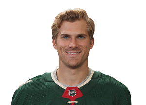
Marcus Foligno | #17
The second generation of the Foligno family to suit up for the
Sabres, Marcus followed his father, Mike, (1981-90) to Buffalo.
Foligno also followed his father's footsteps in junior hockey,
playing from 2007-11 with Sudbury of the Ontario Hockey League.
The Sabres selected Foligno in the fourth round (No. 104) in the
2009 NHL Draft after he scored 12 goals and 30 points in 65 games
during the 2008-09 season. In 2010-11, Foligno finished third on the
team in scoring with 59 points. He was selected as the best body
checker in the Eastern Conference in the OHL Coaches Poll and was
named to the league's Second All-Star Team.
Making his international debut at the 2011 World Junior
Championship, held in Buffalo, Foligno, a Buffalo native, scored two
goals and four points in seven games as Canada won the silver medal.
The 6-foot-3, 226-pound Foligno began the 2011-12 season with
Rochester of the American Hockey League and in 60 games led the team
with five game-winning goals. He was named Rochester's rookie of the
year.
Recalled on four occasions Foligno finished with six goals and 13
points in 14 games for the Sabres in 2011-12. His NHL debut was a
family affair, Dec. 20, 2011, against the Ottawa Senators and older
brother Nick. Foligno enjoyed a five-game point streak from March
10-19, 2012, including his first NHL goal March 10, 2012, at Ottawa,
and his first multipoint game on March 14, 2012, against the
Colorado Avalanche.
He was the third player in Sabres history to record seven or more
points in his first six career games, joining Phil Housley (nine)
and Ray Sheppard (seven). Foligno's 26.1 percent shooting percentage
led the Sabres. He was named the NHL's Rookie of the Month for March
2012 after posting six goals and 11 points in 11 games.
During the 2012-13 season, Foligno finished third on the Sabres with
108 hits. He logged a four-game point streak from Jan. 27-Feb. 2,
2013, and scored twice against the New York Rangers on March 12,
2013.
He scored in three straight games, from Dec. 11-15, 2014, to
highlight his 2014-15 season. Foligno also enjoyed a pair of
three-point nights during the 2015-16 season.
- Position: Wingers
- Born: August 10th, 1991
- Birthplace: Buffalo, NY, USA
- Shoots: Left
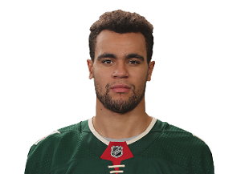
Jordan Greenway | #18
Greenway has already made an impact early in his hockey career. The
second-round pick (No. 50) of the Minnesota Wild in the 2015 NHL
Draft won a gold medal for the United States at the 2014 World U-17
Hockey Challenge and 2015 IIHF World Under-18 Championships. He
excelled at Boston University and played at the 2017 IIHF World
Championship after his sophomore season. the 6-foot-6 forward became
the first African-American player to compete for the U.S. in the
Olympics at the 2018 PyeongChang Games.
Born in Canton, New York, Greenway played high school hockey at
Shattuck-Saint Mary's in Minnesota before joining the USA Hockey
National Team Development Program for two seasons (2013-15). As a
junior at BU, he was selected to the Hockey East Third All-Star Team
after earning 30 points for the second consecutive season.
Greenway signed a three-year contact with the Wild on March 26,
2018, and made his NHL debut the next day in a 2-1 loss to the
Nashville Predators, becoming became the first player to compete in
the Olympics, the NCAA Tournament and the Stanley Cup Playoffs in
the same season. Greenway had one assist in five games with the
Wild, then scored one goal in Minnesota's five-game loss to the
Winnipeg Jets in the Western Conference First Round.
- Position: Wingers
- Born: Feb 16th, 1997
- Birthplace: Canton, New York, USA
- Shoots: Left
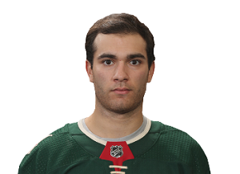
Luke Kunin | #19
Kunin, a forward born in Chesterfield, Missouri, was chosen by the
Minnesota Wild with the No. 15 pick in the 2016 NHL Draft.
Kunin had to overcome being diagnosed with Type I diabetes while in
the sixth grade. He attended Whitfield School in Missouri for one
year before joining the USA Hockey National Team Development Program
and graduating from high school in three years.
Kunin played two seasons at the University of Wisconsin. His nine
goals in 2015-16 were third among NCAA freshmen. The following
season, he became the second sophomore captain in school history and
the first since Mike Eaves 40 years earlier. Kunin led the Badgers
with 22 goals and 38 points in 35 games, to make the All-Big Ten
Second Team.
Kunin ended his collegiate career by signing a three-year contract
with the Wild on March 23, 2017. He scored his first NHL goal in a
6-4 win against the New York Islanders on Oct. 26, 2017; he's the
first player in Wild history to do so while shorthanded.
Kunin was sent back to the American Hockey League on Oct. 29. He
represented Iowa at the 2018 AHL All-Star Game and was recalled by
Minnesota on Feb. 28, 2018. However, his season ended with a torn
ACL in his left knee sustained in a game against the Detroit Red
Wings on March 4.
- Position: Wingers
- Born: December 4th, 1997
- Birthplace: Chesterfield, MO, USA
- Shoots: Right
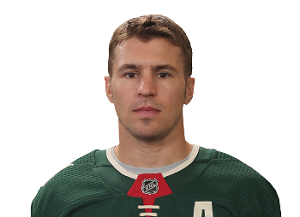
Zach Parise | #11
A hockey player's son born and raised in Minnesota, the "State of
Hockey," Parise seemed destined to take the sport by storm.
At 5-foot-11, somewhat undersized for an NHL winger, the Minneapolis
native was selected No. 17 by the New Jersey Devils in the 2003 NHL
Draft. A Hobey Baker Award nominee in each of his two seasons at the
University of North Dakota, the son of longtime Minnesota North
Stars player and assistant coach J.P. Parise quickly proved himself
to be a gifted scorer with great speed in the pro game.
Sent to the American Hockey League for 2004-05 during the NHL
lockout, he scored 18 goals and 58 points in 73 games during an
all-star season with Albany. After the NHL labor dispute was
settled, Parise joined the Devils as a rookie for the 2005-06 season
and had 14 goals and 32 points in 81 games.
In October of 2006, Parise scored 26 seconds into New Jersey's
season opener, a team record for fastest goal to start a season. He
earned MVP honors with a two-goal, six-point performance at the 2007
YoungStars game and finished the season with 31 goals and 62 points
in 82 games.
It was the first of four straight 30-plus goal seasons for Parise.
He was named an alternate captain for the Devils to start 2008-09,
when he would finish third in the League with 45 goals and fifth in
scoring with 94 points while being named a second-team All-Star.
Parise was remarkably healthy during seven seasons with New Jersey;
knee surgery that limited him to 13 games in 2010-11 marked the only
time Parise missed more than one game for the Devils. It was also
the only time New Jersey missed the playoffs during his time there.
Named captain to start the 2011-12 season, Parise had 31 goals and
69 points in the regular season and helped lead New Jersey to its
first Stanley Cup Final appearance since 2003. The Devils lost the
Final to the Los Angeles Kings in six games. Parise tied for first
in the League with eight playoff goals and tied for sixth with 15
points.
A free agent after the season, Parise signed a 13-year, $98 million
contracts to join his hometown Minnesota Wild. With 18 goals and 38
points in 48 games during the lockout-shortened 2012-13 season,
Parise helped the Wild return to the playoffs for the first time in
five seasons.
A high school national champion at the renowned Shattuck-St. Mary's
School where his father served as director of hockey, Parise won
gold with the United States at the 2004 World Junior Championships
and silver at the 2010 Olympics.
- Position: Wingers
- Born: July 28th, 1984
- Birthplace: Minneapolis, MN, USA
- Shoots: Left
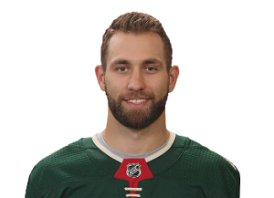
Jason Zucker | #16
Born in Southern California, Zucker moved to Las Vegas with his
family when he was an infant and would become both the first
Nevada-raised draft pick and player in NHL history.
The forward was the Minnesota Wild's second-round pick (No. 59) in
the 2010 NHL Draft, and it's no wonder he became one of the fastest
skaters in the league: His mother, Natalie, is a former competitive
figure skater, and his father, Scott, is a general contractor who
built ice and roller rinks when Jason was young, allowing his then
kindergarten-aged son hours a day of free skating time.
Having followed his older brother Evan into ice hockey, Jason began
traveling out of state to find better competition at age 10,
stopping in Los Angeles and Detroit before ending up with USA
Hockey's National Development Team Program in Ann Arbor, Mich., as a
teenager.
Zucker was one of two players to win three gold medals within a
calendar year, helping the United States win the World Junior
Under-18 tournaments in 2009 and 2010 as well as gold at the 2010
World Junior Championship. Zucker, who scored two goals in seven
games as one of the youngest players on that U.S. world junior team
in 2010, represented the U.S. twice more at the event, winning a
bronze medal in 2011.
Already committed to the University of Denver before being drafted
by the Wild in 2010, Zucker played two seasons there. He had 45
goals and 91 points in 78 college games and turned pro at the end of
the 2011-12 season.
As fast as Zucker is, his NHL career started slowly; he had eight
goals and 12 points over 47 games between the tail end of the
2011-12 season and the 2013-14 season.
Zucker moved between the American Hockey League and the NHL during
the lockout-shortened 2012-13 season and scored his first NHL goal
in a 3-2 win against Detroit on Feb. 17, 2013.
A torn quadriceps cut short Zucker's 2013-14 season before he broke
out in 2014-15 with 21 goals in 51 games, good enough to finish 10th
in the NHL with a 16.9% shooting percentage. On Oct. 25, 2015,
Zucker set a Wild franchise record by scoring 10 seconds into a 5-4
win against the Winnipeg Jets.
- Position: Wingers
- Born: January 16th, 1992
- Birthplace: Newport Beach, CA, USA
- Shoots: Left
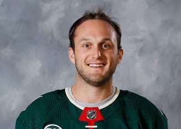
Anthony Bitetto | #02
FBitetto came through the New York Apple Core youth hockey system
that had already developed NHL players Rob Scuderi, Douglas Murray,
Mark Eaton and Eric Nystrom.
Before being selected by the Nashville Predators in the sixth round
(No. 168) of the 2010 NHL Draft, Bitetto helped Indiana of the
United States Hockey League win the Clark Cup in the 2008-09 season
and was named to the All-USHL second team in 2009-10, when he had
five game-winning goals.
Bitetto began playing for Northeastern University in 2010-11, when
he tied for second among Hockey East defensemen with 14 power-play
points (three goals, 11 assists) and was named to the conference's
all-rookie team. Bitetto also won the 2011 Ed Arrington Rookie of
the Year Award, given to Northeastern's top freshman.
Bitetto led Northeastern defensemen with four goals and 15 points in
his second season. He didn't miss a game in his two college seasons
and turned pro at the end of 2011-12, playing one game in the Calder
Cup Playoffs for Milwaukee of the American Hockey League.
Bitetto split 2012-13, his first full pro season, between Milwaukee
and Cincinnati of the East Coast Hockey League. In 2013-14 he
finished as the team's leading scorer among defensemen (11 goals, 36
points). He also was tied for sixth among AHL defensemen in goals
and tied for ninth with six power-play goals. He was second among
AHL defensemen in shooting percentage at 11.6.
Bitetto made his NHL debut Jan. 17, 2015, against the Detroit Red
Wings and played seven games that season with the Predators. Among
Milwaukee defensemen in 2014-15, he was first with four goals and
second with 30 points.
Bitetto scored his first NHL goal March 9, 2016, against the Calgary
Flames, and made his Stanley Cup Playoff debut April 15, 2016,
against the Anaheim Ducks.
- Position: Defense
- Born: July 15th, 1990
- Birthplace: Island Park, NY, USA
- Shoots: Left
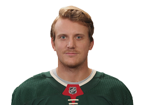
Jonas Brodin | #25
Right from the start of his NHL career, Brodin proved capable of
carrying on Sweden's rich tradition of producing successful NHL
defensemen.
Selected by the Minnesota Wild with the No. 10 pick in the 2011 NHL
Draft, Brodin began his North American pro career with Houston of
the American Hockey League during the 2012-13 NHL lockout. Brodin
played in nine AHL games before sustaining a broken clavicle and
missing nearly three months.
At 19, Brodin was the youngest defenseman in the NHL when he made
his debut with the Wild on Jan. 25, 2013 against the Detroit Red
Wings. Brodin got his first NHL point, an assist, in that game, a
5-3 loss.
Brodin spent most of the season playing as part of Minnesota's top
defense pairing with Ryan Suter and led all NHL rookies by averaging
more than 23 minutes of ice time per game.
It took Brodin 23 games to score his first NHL goal. On March 14,
2013, Brodin's shot from the left faceoff dot helped the Wild to a
5-3 win against the Colorado Avalanche. Brodin finished the 2012-13
season with two goals and 11 points in 45 games and just missed
being named a finalist for the Calder Trophy as the NHL's top
rookie.
More importantly to the Wild, Brodin's play alongside Suter helped
Minnesota return to the Stanley Cup Playoffs for the first time in
five years. Brodin's offensive play improved in his second season as
he had eight goals and 19 points in 79 games while finishing second
to Suter on the Wild in both blocked shots (117) and average ice
time.
In October 2014, Minnesota signed Brodin to a six-year contract
extension. He promptly rewarded the Wild's faith with another solid
season that saw him earn his first votes as a Norris Trophy
candidate. In the 2016 postseason, Brodin scored his first playoff
goal in Game 6 of the first round against the Dallas Stars, but
Minnesota was eliminated.
- Position: Defense
- Born: July 12th, 1993
- Birthplace: Karlstad, Sweden
- Shoots: Left
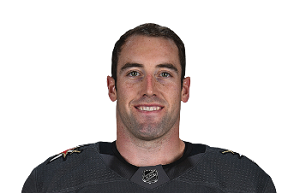
Brad Hunt| #77
Hunt has played in 11 games since being traded to the Wild from the Golden Knights. He has three goals -- all on the power play -- and an assist to show for it. Hunt has carved out a niche with the Wild, although he's still an occasional healthy scratch like he was in Vegas.
- Position: Defense
- Born: August 24th, 1988
- Birthplace: Maple Ridge, BC, Canada
- Shoots: Left
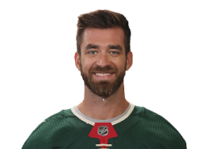
Greg Pateryn | #29
Pateryn is an old-school, barricade-the-door defenseman who will
never be accused of being flashy.
Still, he draws notice with his physical play, as he did during the
2015-16 season, when he had 100 hits in 38 games for the Montreal
Canadiens.
Selected by the Toronto Maple Leafs in the fifth round (No. 128) of
the 2008 NHL Draft, Pateryn was with the organization less than two
weeks. On July 3, 2008, Toronto traded Pateryn to the Canadiens in a
deal that sent forward Mikhail Grabovski to the Maple Leafs.
That fall, the product of Detroit suburb Sterling Heights headed to
the University of Michigan. As a junior he had a plus-15 rating as
Michigan reached the Frozen Four, where it lost to Minnesota-Duluth
in the championship game. Pateryn was plus-16 as a senior and served
as alternate captain.
After graduating, Pateryn signed a two-year entry-level contract
with the Canadiens. His first pro season, 2012-13, was marred by an
elbow injury, but he played 39 games with Hamilton of the American
Hockey League and three games with the Canadiens, making his NHL
debut on March 9, 2013, against the Tampa Bay Lightning.
- Position: Defense
- Born: June 20th, 1990
- Birthplace: Sterling Heights, MI, USA
- Shoots: Right
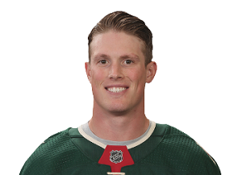
Nick Seeler | #36
Seeler, a defenseman, made his NHL debut against the New York
Rangers on Feb. 12, 2018, seven years after he was a fifth-round
pick (No. 131) by the Minnesota Wild in the 2011 NHL Draft.
The Wild selected the Minnesota native after he graduated from Eden
Prairie High School. He played with Muskegon and Des Moines in the
United States Hockey League during the 2011-12 USHL season, when he
was named to the league's All-Rookie Team.
Seeler played two seasons for the University of Nebraska-Omaha
before transferring to the University of Minnesota in 2014. After
one season with the Golden Gophers, Seeler signed a two-year
contract with the Wild and joined their American Hockey League
affiliate in Iowa for the 2016-17 season. He spent most of the
2017-18 season with Iowa, but earned a late-season recall by the
Wild and made his NHL debut against the New York Rangers on Feb. 12,
2018.
In all, he had five assists in 22 games with the Wild, and had two
assists in Minnesota's five-game loss to the Winnipeg Jets in the
Western Conference First Round of the Stanley Cup Playoffs.
Seeler's sister, Kelly, was a member of Minnesota's national
championship women's hockey team in 2012.
- Position: Defense
- Born: June 3rd, 1993
- Birthplace: Eden Prairie, MN, USA
- Shoots: Left
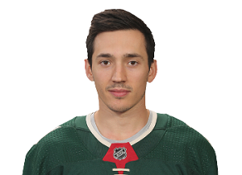
Jared Spurgeon | #46
Spurgeon is small in stature but can make a big impact.
The 5-foot-9, 176-pound defenseman is considered small at a position
where size and reach are often critical.
Spurgeon was the highest-scoring defenseman for Spokane of the
Western Hockey League when it won the Memorial Cup in 2007-08, but
lasted until the sixth round of the 2008 NHL Draft, where the New
York Islanders picked him at No. 156 but never signed him. After two
more seasons with Spokane, the Edmonton native became a free agent
and accepted a training-camp invite from the Minnesota Wild before
the 2010-11 season.
That led to a contract, a short stint with Houston of the American
Hockey League and, on Nov. 29, 2010 - Spurgeon's 21st birthday - his
NHL debut in a 3-0 road loss against the Calgary Flames. With family
members in attendance, Spurgeon had one shot in 14:42 of ice time.
It would take 20 more games for Spurgeon to get his first NHL point,
an assist during a 4-2 road win against the Chicago Blackhawks Jan.
25. He finished the season with four goals and 12 points while
averaging 15:04 of ice time over 53 games. With the Wild out of the
Stanley Cup Playoffs, Spurgeon went back to the AHL, scoring a goal
and 11 points in 23 games while helping Houston reach the Calder Cup
Finals.
Rookie success turned out to be just the beginning for the
smooth-skating Spurgeon. He became a master of putting himself in
the right position and using his stick to poke the puck away from
opponents.
He did so while committing few penalties. From the time he entered
the NHL until he signed a four-year, $20.75 million contract
extension with the Wild in December 2015, Spurgeon's 38 penalty
minutes were the fewest among defensemen who had played at least 300
games over that time.
- Position: Defense
- Born: November 29th, 1989
- Birthplace: Edmonton, AB, Canada
- Shoots: Right

Ryan Suter | #20
In the NHL's modern history, few players have deserved the title of
workhorse defenseman more than Suter.
A first-team NHL All-Star and Norris Trophy runner-up with the
Minnesota Wild in 2012-13, Suter has often ranked among the league
leaders in ice time.
The Nashville Predators first-round pick (No. 7) in the 2003 NHL
Draft, the Madison, Wis., native had bloodlines to succeed. His late
father, Bob, won gold with the United States in the "Miracle on Ice"
at the 1980 Olympics. His uncle Gary Suter was a Stanley Cup
champion, Calder Trophy winner and played in four NHL All-Star
Games.
Suter spent two seasons with USA Hockey's National Team Development
Program. After being drafted, he played one season at the University
of Wisconsin and then a season with Milwaukee of the American Hockey
League.
A gifted skater and passer with a physical dimension to his game,
Suter had a productive NHL debut, getting an assist on Nashville's
first goal of the 2005-06 season. It would be the first of four
points Suter scored as the Predators reeled off eight straight wins
to start the season.
He finished his rookie season with a goal and 16 points and, perhaps
most importantly, a new teammate in Shea Weber, a fellow 2003 draft
pick by Nashville. Suter and Weber would become one of the NHL's
best defense pairs over a six-season run. From 2006-07 through
2011-12, they formed the backbone of a Predators team that never
finished with fewer than 88 points and made the playoffs five times.
Suter's pass-first game melded perfectly with Weber's big shot.
During their time together Suter ranked 14th among NHL defensemen
with 185 assists. Suter played a huge role in helping Weber top all
NHL defensemen with 97 goals over that period.
Suter was a gold medalist with the United States at the 2004 World
Junior Championship and assistant captain of the American team that
won silver at the 2010 Vancouver Olympics. On July 4, 2012, he and
U.S. teammate Zach Parise each signed a 13-year, $98 million
free-agent contract to join the Minnesota Wild, with whom Suter's
already-heavy workload actually increased.
- Position: Defense
- Born: January 21st, 1985
- Birthplace: Madison, WI, USA
- Shoots: Left
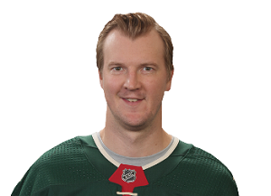
Devan Dubnyk | #40
Dubnyk knows about the highs and lows of an NHL career.
In little more than a calendar year, the Regina, Saskatchewan-born,
Calgary-raised goaltender went from being fourth on his team's depth
chart to becoming a contender for the Vezina and Hart trophies.
Dubnyk broke into the League with the Edmonton Oilers during the
2009-10 season. His play improved and he earned the starting job;
from 2010-2013 he had a .917 save percentage and 2.58 goals-against
average.
But in 2013-14, everything fell apart. Dubnyk opened the season by
allowing 10 goals on 59 shots in back-to-back losses to the Winnipeg
Jets and Vancouver Canucks. A .891 save percentage and 3.43 GAA in
32 appearances led to Dubnyk being traded to the Nashville Predators
on Jan. 15, 2014.
He allowed nine goals over two starts for Nashville and was again
traded, this time to the Montreal Canadiens. He made eight
appearances the rest of the season, all in the AHL. Sitting fourth
on the depth chart for the playoff-bound Canadiens, Dubnyk asked to
leave the team and go home to Edmonton to be with his family.
But three events would soon change everything. After signing a
one-year contract with the Arizona Coyotes, Dubnyk picked up a new
style of goaltending at a summer fitness camp, enjoyed a confidence
boost working with Coyotes goalie coach Sean Burke and, exactly one
year after being traded by Edmonton, was traded to the Minnesota
Wild for a third-round draft pick.
Buoyed by the teachings of the so-called "Head Trajectory" technique
that helped Dubnyk maximize his massive 6-foot-6 frame, he posted an
18-save shutout against the Buffalo Sabres in his first start with
the Wild, on Jan. 15, 2015. In 39 starts with Minnesota, Dubnyk won
27 games, had a .936 save percentage and 1.78 GAA and helped the
Wild make the Stanley Cup Playoffs.
With his second-half performance in 2014-15, Dubnyk finished third
in Vezina Trophy voting, fourth in Hart Trophy balloting and won the
Bill Masterton Trophy for dedication to hockey. After the season,
Dubnyk signed a six-year, $26 million free-agent contract with the
Wild. He made his first appearance in the NHL All-Star Game in 2016.
- Position: Goalie
- Born: May 4th, 1986
- Birthplace: Regina, SK, Canada
- Shoots: Left
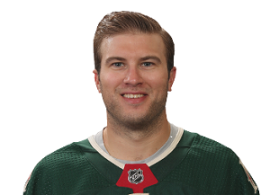
Alex Stalock | #32
Stalock was a fourth-round pick (No. 112) by the San Jose Sharks in
the 2005 NHL Draft and spent the first five seasons of his NHL
career in San Jose before he was traded to the Toronto Maple Leafs
on Feb. 27, 2016. The native of St. Paul, Minnesota, finished the
season in the American Hockey League before signing a two-year
contract with the Minnesota Wild on Feb. 2, 2017.
Stalock played three seasons at the University of Minnesota Duluth
and made his NHL debut for the Sharks in relief of Antti Niemi on
Feb. 1, 2011, stopping all nine shots he faced in a 5-3 win against
the Phoenix Coyotes. Shortly after he was reassigned to Worcester of
the AHL, he sliced a nerve behind his knee after it was stepped on
by a skate during a game against Manchester and missed the remainder
of the 2010-11 season. The injury sidelined Stalock until Jan.
12,22012, when he started for Stockton of the ECHL.
Stalock won the job as the Sharks' backup goaltender for the
2013-14. He made 38 saves in his first NHL start, a 5-2 win against
the Ottawa Senators on Oct. 27, 2013. Stalock earned his first NHL
shutout with a 3-0 victory against the Florida Panthers on Jan. 16,
2014. He shut out the Winnipeg Jets 1-0 in his next start and
extended his shutout streak to 178:55, passing Evgeni Nabokov for
the longest in Sharks history.
Stalock played 28 games as the backup to Devan Dubnyk for Minnesota
in 2017-18, going 10-10-4 with a 2.85 goals-against average and .910
save percentage.
- Position: Goalie
- Born: July 28th, 1987
- Birthplace: St. Paul, MN, USA
- Shoots: Left
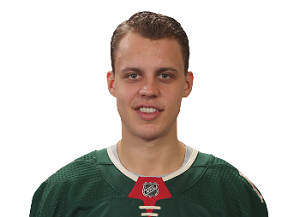
Joel Eriksson EK | #14
Eriksson Ek, a forward born in Karlstad, Sweden, was chosen by the
Minnesota Wild with the No. 20 pick in the 2015 NHL Draft.
Eriksson Ek played one season for Farjestad in the Swedish Hockey
League, where his father Clas Eriksson played 13 seasons, before he
was selected by the Wild. He signed a three-year contract with
Minnesota on July 13, 2015, spent one more season in Sweden, then
came to North America and scored his NHL debut, a 2-1 loss to the
New Jersey Devils on Oct. 22, 2016. Eriksson Ek had six points
(three goals, three assists) before he was reassigned to Farjestad
to preserve his entry-level contract. He returned for the Wild's
final five games of the season.
Eriksson Ek played 75 games for the Wild in 2017-18, finishing with
16 points (six goals, 10 assists). After scoring on opening night
against the Detroit Red Wings, he went 50 games without a goal until
scoring in a 5-3 win against the New York Islanders on Feb. 19,
2018.
His brother, Olle Eriksson Ek, was a fifth-round pick (No. 153) by
the Anaheim Ducks in the 2017 NHL Draft.
- Position: Center
- Born: January 29th, 1997
- Birthplace: Karlstad, Sweden
- Shoots: Left
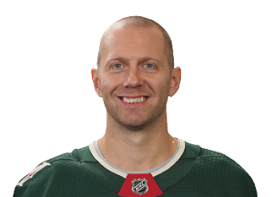
Eric Fehr | #21
Selected by the Washington Capitals with the No. 18 pick in the 2003
NHL Draft, Fehr was a junior scoring star with Brandon in the
Western Hockey League, posting back-to-back 50-goal seasons in 2004
and 2005. Fehr's 111 points in 2005 led the league and he was named
the Four Broncos Memorial Trophy winner as the player of the year.
The honors continued his first year as a pro in 2005-06 when he
scored 25 goals to lead Hershey of the American Hockey League to the
Calder Cup.
Unfortunately, that's when injuries hit. Before Fehr could land a
regular spot in the Washington lineup he was diagnosed with a
herniated disc in his back in late February 2007. He did not return
until Feb. 5, 2008. Surgery on both shoulders curtailed Fehr's
scoring in 2008-09 and 2010-11, although he had 21 goals and 39
points in 69 games in 2009-10.
Fehr was traded to the Winnipeg Jets before the 2011-12 season, but
after one season returned to the Capitals as a free agent and
rejuvenated his career in a different role. Instead of serving as a
potential top-six scoring threat, Fehr was used in more of a
lower-line role where he thrived, getting 41 goals in three seasons.
Though Fehr underwent elbow surgery following the 2014-15 season, he
signed a three-year contract with Pittsburgh and turned into a
shutdown center for the 2016 Stanley Cup champions.
Fehr is also an author. He co-wrote "The Bulliest Dozer," an
anti-bullying story for children published in 2014, with proceeds
going to charity.
- Position: Center
- Born: September 7th, 1985
- Birthplace: Winkler, MB, Canada
- Shoots: Right
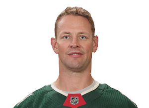
Matt Hendricks | #15
Hendricks was drafted by the Nashville Predators right out of high
school, but his career took a circuitous route through the minor
leagues before he carved out a niche as an effective, full-time NHL
player.
The Predators selected Hendricks in the fifth round (No. 131) in the
2000 NHL Draft, the year he was a key part of Blaine High School's
state championship team in hockey-mad Minnesota. College came first
for Hendricks, who played four seasons at St. Cloud State in
Minnesota before moving on to professional hockey.
Hendricks, who had rejected the Predators' contract offer, was a
free agent and began a minor-league journey that included stops in
the American Hockey League with Milwaukee, Lowell, Hershey and
Providence. He had a big season (22 goals, 52 points) on a
first-place Providence team in 2007-08, but the Boston Bruins did
not call him up to the NHL.
That made the 6-foot, 207-pound Hendricks, the son of a Marine,
realize the physical, grinding game - checking, winning faceoffs,
killing penalties, blocking shots - had to be his trademark if he
were to get to the NHL because he wasn't going to make it on
offensive production. He fine-tuned his game and was a physical,
all-purpose energy player in his final season in the minors with
Lake Erie in 2008-09.
Hendricks has had NHL stints with the Colorado Avalanche, Washington
Capitals, Predators and Edmonton Oilers, who acquired him in a trade
for goaltender Devan Dubnyk on Jan. 15, 2014. His selfless play has
earned him three nominations for the Bill Masterton Trophy, given to
the player who best exemplifies the qualities of perseverance,
sportsmanship and dedication to hockey.
- Position: Center
- Born: June 17th, 1981
- Birthplace: Blaine, MN, USA
- Shoots: Left
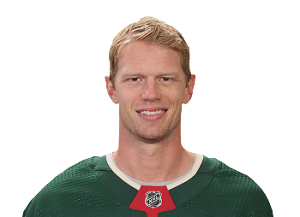
Eric Staal | #12
Eric is one of many NHL stars grateful for the league’s crackdown on
clutching and grabbing in the neutral zone. Though he’s big and
physical, he is at his best in open ice when he can use his speed,
vision and stickhandling skills to his advantage.
While Eric likes to control the puck, he knows how to create space
for himself when he doesn’t have it. This, combined with a quick,
accurate shot, makes him a dangerous goal scorer. Eric, however, is
most dangerous as a playmaker. He is a great passer who regularly
sets up teammates with good scoring chances.
Eric is the rare young player who understands his responsibilities
on both ends of the ice. While not a grinder, he’s more than willing
to mix it up in the corners. Thanks to his long reach and quick
hands, he’s also excellent on faceoffs. Not surprisingly, Eric is
usually on the ice with the game on the line and his team up by a
goal.
Due to his hard work off the ice, Eric thrives the more ice time he
gets. He’s particularly effective in the third period. His work
ethic and production have earned the respect of his teammates and
make him a natural leader.
- Position: Center
- Born: October 29th, 1984
- Birthplace: Thunder Bay, ON, Canada
- Shoots: Left